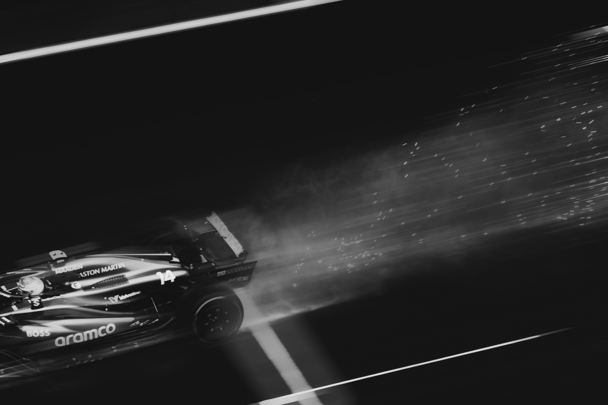
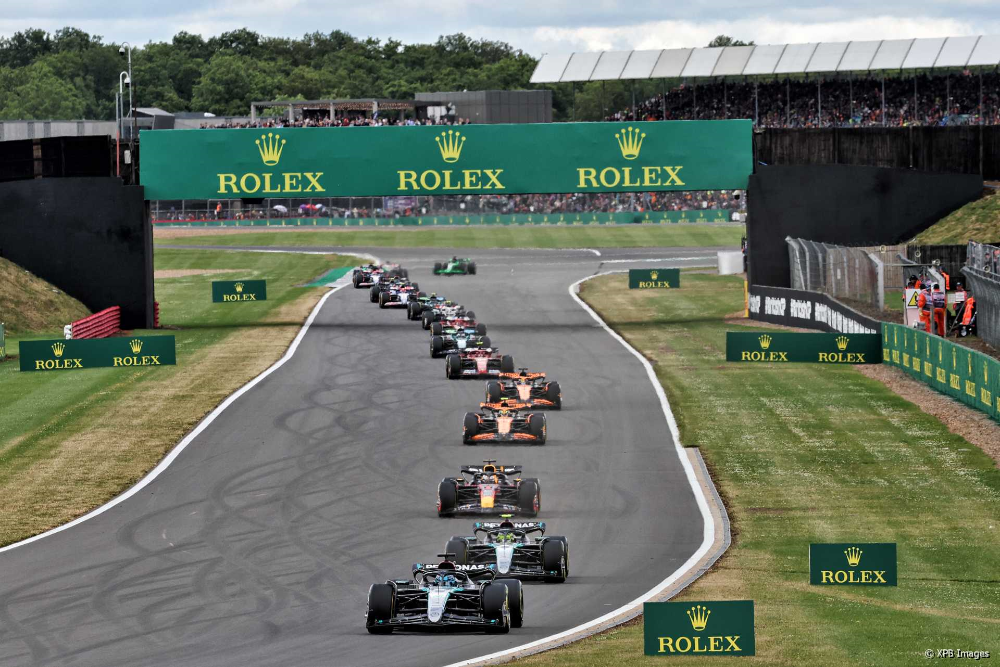
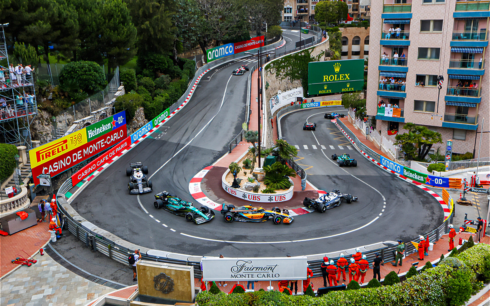
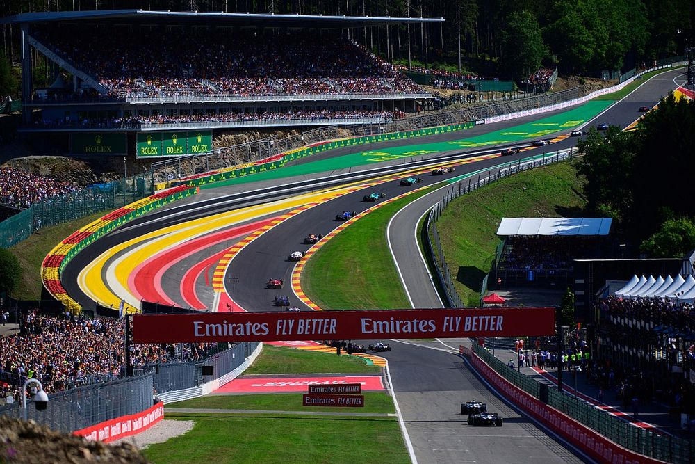
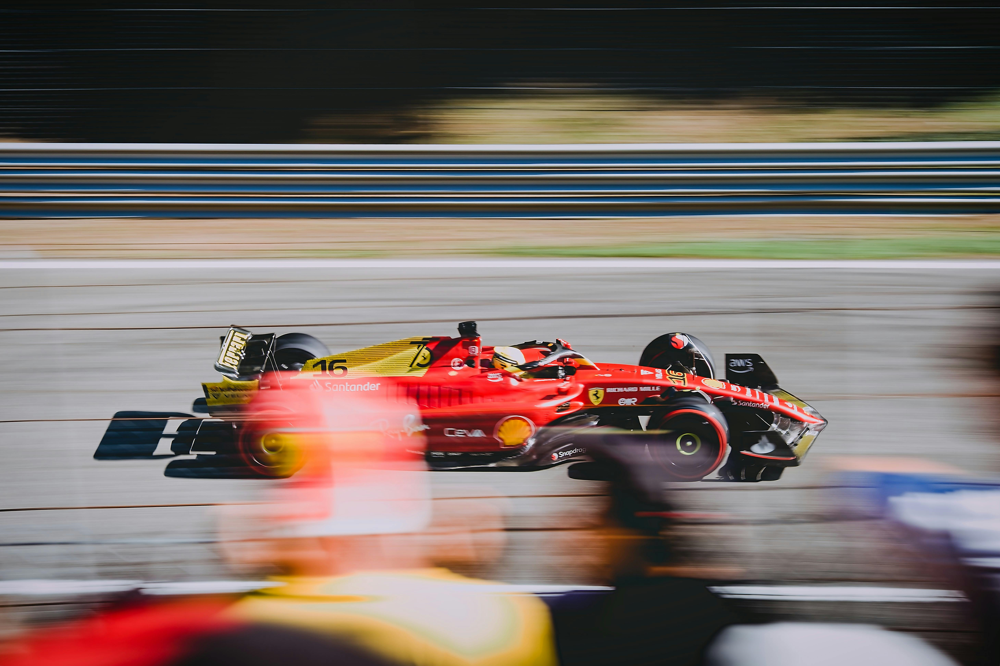
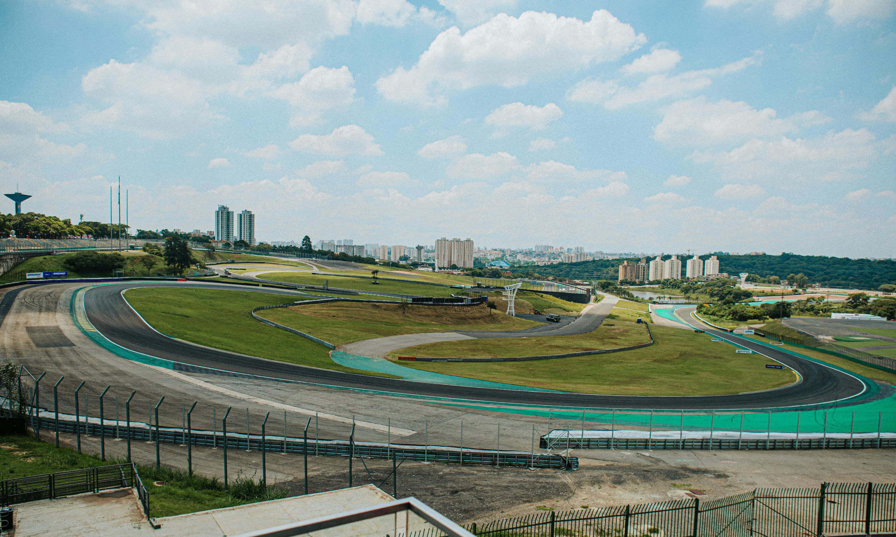

Location: Silverstone, UK
Lap Record: 1:27.097 (Max Verstappen, 2020)
Length: 5.891 km | Turns: 18
First GP: 1950 | Laps: 52
The birthplace of Formula 1 continues to deliver epic battles. Lewis Hamilton's dramatic 2020 victory on three wheels, Zhou Guanyu's scary turn 1 crash in 2022, as well as Max Verstappen and Lewis Hamilton's coming together through Cobb's have only futher cemented its place in modern F1 history. The Maggotts-Becketts complex remains the ultimate test of driver skill, taken at 300km/h+ with 6G forces. Recent resurfacing has improved safety while preserving the track's high-speed DNA. The past, future, and present of Silverstone is as bright as it has been from the start.

Location: Monte Carlo, Monaco
Lap Record: 1:12.909 (Lewis Hamilton, 2021)
Length: 3.337 km | Turns: 19
First GP: 1950 | Laps: 78
The crown jewel of Formula 1 - where even the smallest mistake ends in heartbreak. The narrow streets of Monte Carlo have delivered decades of drama, with legends like Ayrton Senna carving their name into its winding layout. Senna’s six wins here - five in a row - are the stuff of F1 mythology. In 2024, Charles Leclerc finally claimed victory at home, breaking his Monaco curse in emotional fashion. The iconic Fairmont Hairpin, the slowest corner in F1, tests low-speed handling and driver patience like nowhere else. The tunnel, with its sudden lighting shift and bumpiness, is uniquely intimidating, while the Swimming Pool section demands pinpoint precision at high speed. In Monaco, there’s no room to breathe - only precision, nerve, and inches between triumph and disaster.

Location: Stavelot, Belgium
Lap Record: 1:46.286 (Valtteri Bottas, 2018)
Length: 7.004 km | Turns: 20
First GP: 1950 | Laps: 44
Spa-Francorchamps is a cathedral of speed, flow, and bravery. It’s the longest circuit on the calendar at 7.004 km, and no corner demands more from a driver than the legendary Eau Rouge-Raidillon complex. After braking hard into the hiarpin La Source, drivers charge downhill before hitting the hauntingly steep, flat-out uphill run through Eau Rouge and Raidillon. The compression at the bottom pins the car to the track, and the blind crest tests precision like nowhere else - it’s full commitment or nothing. Spa’s unpredictable microclimate often splits the track into wet and dry zones, turning strategy into chaos. From Schumacher’s many triumphs to the infamous 1998 pileup, and the tragic passing of young talent Anthoine Hubert in 2019 - Spa is steeped in the most violent drama of the sport's history. Every year it's history grows - making it a must watch. This track rewards the brave, punishes the greedy, and always delivers.

Location: Monza, Italy
Lap Record: 1:21.046 (Rubens Barrichello, 2004)
Length: 5.793 km | Turns: 11
First GP: 1950 | Laps: 53
Monza is Ferrari country. The sea of red in the grandstands, the deafening cheers for a scarlet car, even in practice, and the heartbreak when things go wrong. It's a pressure cooker unlike any other. "La Pista Magica" is built for speed: engines scream down long straights into brutal braking zones like the Rettifilo chicane. The Curva Grande tempts drivers to stay flat, while Ascari and Parabolica demand precision at speed. Gasly’s 2020 shock win and Ferrari golden boy Charles Leclerc's 2024 domination both sent shockwaves. When a red car leads at Monza, it feels like only God himself put it there. The Tifosi don’t just watch this iconic track every year - they live for it.

Location: São Paulo, Brazil
Lap Record: 1:10.540 (Valtteri Bottas, 2018)
Length: 4.309 km | Turns: 15
First GP: 1973 | Laps: 71
Number one - for a reason. Interlagos delivers chaos, magic, and unforgettable moments like no other. In 2024, Max Verstappen delivered a wet-weather masterclass - slicing through the pack in changing conditions, completely untouchable while others struggled just to stay on track. But it’s not the first time this circuit made history. Think back to 2008 - Lewis Hamilton, last lap, last corner, title on the line... and he snatches it. The elevation changes, anti-clockwise layout, and tight, technical corners like the Senna S keep drivers on edge from lights out to the chequered flag. When the rain hits, anything can happen. And with a Brazilian crowd that lives and breathes every lap, Interlagos turns Grand Prix weekends into cinematic drama. This isn’t just the best circuit on the calendar - it’s F1 at its rawest.
